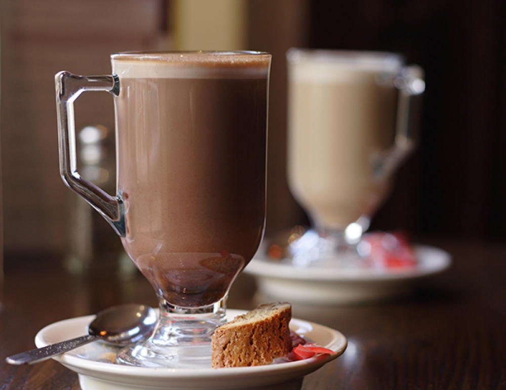

<!DOCTYPE html>
<html>
<head lang="en">
<meta name="viewport" content="width=device-width, user-scalable=no"/>
    <title>Chocolate</title>
    <link rel="stylesheet" type="text/css" href="Estilos.CSS">
    
    <body>
    <div class="cabecera">
        <center></center>
    </div>
    </body>
     <body background="25120819-cerrar-un-fondo-de-coloridos-dulces-de-caramelos-de-azucar.jpg"> 
     </body>
<body><a href="espanol.html"></a></body>
    
    <form>
    
        <div class="contenido">
         <center><h1><font face="Comic Sans MS,arial,verdana"size=5>Trufas de chocolate con leche condensada</font></h1></center>
        <center></center>
        <center><h1><font face="Comic Sans MS,arial,verdana"size=5>Ingredientes</font></h1></center>
        <center><h1><font face="Comic Sans MS,arial,verdana"size=4> 1 lata de leche condensada (aprox. 400 g),  2 cucharadas soperas de cacao puro en polvo 100%,  1 cucharada sopera de mantequilla,  1 pizca de sal (opcional), Cacao puro en polvo 100 % para rebozar.</font></h1></center>
        <center><h1><font face="Comic Sans MS,arial,verdana"size=5>Preparación</font></h1></center>
        <center><h1><font face="Comic Sans MS,arial,verdana"size=4>Coloca la mantequilla en una sartén o cacerola a fuego bajo y espera a que se derrita. A continuación, añade la sal y el cacao en polvo y mezcla hasta disolver todos los grumos. La sal ayuda a acentuar el sabor del cacao, pero es un ingrediente opcional.</font></h1></center>
        <center><h1><font face="Comic Sans MS,arial,verdana"size=4>Añade la leche condensada y remueve hasta que la mezcla se despegue del fondo de la cacerola como se ve en la foto. En ese momento, apaga el fuego y traspasa la mezcla a un molde enmantequillado.</font></h1></center>
        <center><h1><font face="Comic Sans MS,arial,verdana"size=4>Deja que la mezcla se enfría y forma las bolitas de leche condensada y chocolate con las manos, aproximadamente moldea las trufas del tamaño de una nuez.</font></h1></center>
        <center><h1><font face="Comic Sans MS,arial,verdana"size=4>Coloca el cacao en polvo sobrante en un plato y reboza las trufas de chocolate hechas con leche condensada bien hasta cubrirlas totalmente. ¡Y listo! Disfruta de este dulce con cacao puro y dinos en los comentarios lo que te ha aparecido.</font></h1></center>
</div>
    
     <div class="contenido">
         <center><h1><font face="Comic Sans MS,arial,verdana"size=5>Frappé de chocolate</font></h1></center>
        <center></center>
        <center><h1><font face="Comic Sans MS,arial,verdana"size=5>Ingredientes</font></h1></center>
        <center><h1><font face="Comic Sans MS,arial,verdana"size=4>500 ml.de leche de almendras, 500 ml.de leche de coco en polvo(sin azucar), 100gr.de azúcar moreno, 1 cucharadita de canela, Esencia de vainilla al gusto(opcional).</font></h1></center>
         
        <center><h1><font face="Comic Sans MS,arial,verdana"size=5>Preparación</font></h1></center>
        <center><h1><font face="Comic Sans MS,arial,verdana"size=4>Colocar los vasos en los que se vaya a servir el frappé en el congelador para que estén bien fríos.</font></h1></center>
        <center><h1><font face="Comic Sans MS,arial,verdana"size=4>Repartir la leche de almendras en cubiteras y congelar hasta que quede convertida en hielo.</font></h1></center>
        <center><h1><font face="Comic Sans MS,arial,verdana"size=4>Colocar los hielos en el vaso de una batidora potente o en el accesorio picador de la misma y regar con la leche de coco.</font></h1></center>
        <center><h1><font face="Comic Sans MS,arial,verdana"size=4>Triturar hasta que ambos ingredientes se integren por completo y los hielos estén completamente picados.</font></h1></center>
        <center><h1><font face="Comic Sans MS,arial,verdana"size=4>Agregar el chocolate en polvo, la canela y el azúcar moreno. Seguir triturando hasta que todos los ingredientes se integren por completo.</font></h1></center>
        <center><h1><font face="Comic Sans MS,arial,verdana"size=4>Para finalizar, añadir la esencia de vainilla y mezclar todo muy bien.</font></h1></center>
        <center><h1><font face="Comic Sans MS,arial,verdana"size=4>Sacar los vasos del congelador y repartir el frappé de chocolate y canela en ellos.</font></h1></center>

</div>
    
              
    </form>        
    
   
</head>
</html>